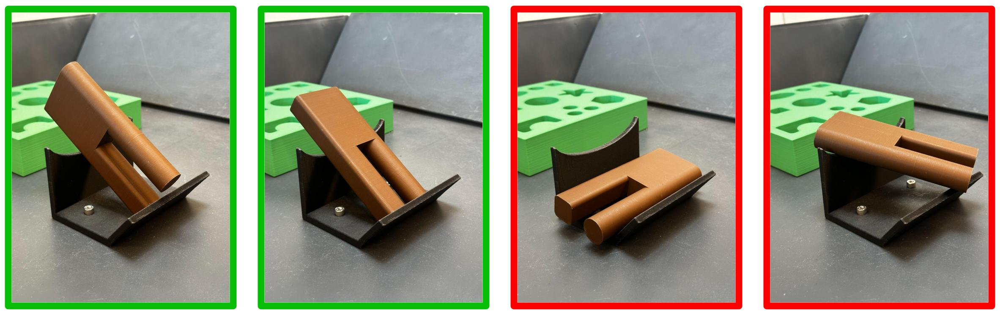
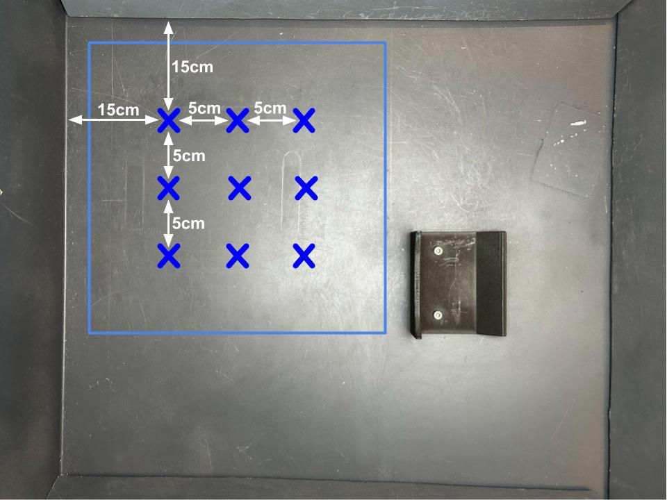
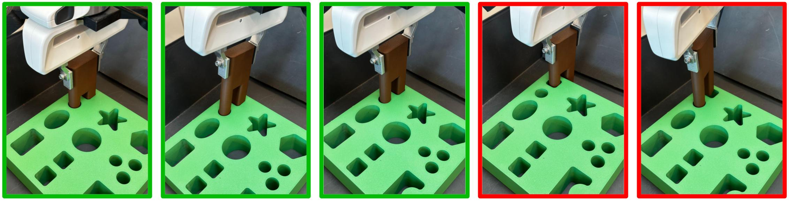

Initial State: For each trial, place the chosen object inside the grasp randomization region, centered at any of the 9 positions marked with "X" in left image below, in one of the 8 orientations depicted in the right image below.
The 9 possible grasp object positions inside the grasp randomization region
The 8 possible grasp object orientations: object laying vertically or horizontally, with 4 possible rotations in the z-axis.
Number of Trials: 50 trials total; sample 5 seen and 5 unseen objects and conduct 5 trials each.
Success Criteria: The object is firmly grasped by the gripper such that it won't fall after being picked up.
Initial State: An assymetric object is grasped by the gripper in one of the two orientations below, 5cm above the
center of the grasp region.
1) Orientation 1 is only for objects that are assymetric along the long side (shapes 6, 7, and 8).
2) Likewise,
orientation 2 is only for objects that are assymetric along the cross section (shapes 5 and 6).
Initial orientation 1: object is horizontal and the insertion prong is facing the board.
Initial orientation 2: object is vertical and opposing the orientation of the hole in the insertion board.
Number of Trials: 50 trials total; sample 5 seen objects of shapes 5, 6, 7, 8; and 5 unseen objects. Conduct 5 trials each.
Success Criteria:
1) If the object started in orientation 1, the task is considered success if the object is placed within the randomization region, and the insertion prong
is facing away from the board, within ±15º of rotation tolerance as shown in the top filmstrip below.
2) If the object started in orientation 2, the task is considered success if the object is placed within the randomization region, and the top cross section of the object
is aligned with the corresponding opening in the board, within a ±15º tolerance as shwon in the bottom filmstrip.
Initial State: An object is grasped by the gripper horizontally 5cm above the center of the grasp region.
Number of Trials: 50 trials total; sample 5 seen and 5 unseen objects and conduct 5 trials each.
Success Criteria: The object is resting on the environment fixture diagonally.
Initial State: An object is placed diagonally on the fixture; the arm is 5 cm above the center of the fixture.
Number of Trials: 50 trials total; sample 5 seen and 5 unseen objects and conduct 5 trials each.
Success Criteria: The object is grasped vertically such that it can be held up.
Initial State: The chosen insertion object is grasped vertically 20 cm above the center of the insertion region, matching the orientation of the target insertion hole; the insertion board matching the size of the chosen object is placed within the insertion randomization region, centered at one of the 9 positions randomly.
The 9 possible insertion board positions within the insertion randomization region.
Number of Trials: 45 trials total; sample 1 object for each of the 9 shapes and conduct 5 trials each.
Success Criteria: The bottom surface of the object is completely inserted in the correct matching hole.
Initial State: An object is placed within the grasping randomization region the same way as in the grasp task above; the insertion board is placed within the insertion randomization region the same way as the insertion task above; the arm is 15cm above the center of the region.
Number of Trials: 10 trials total; sample 5 objects and conduct 2 trials each.
Success Criteria: The object is completely inserted in the correct matching opening. Same criteria as the insertion task above.
Initial State: All objects are placed with arbitrary orientation inside the grasping randomization region; the board is fixed in the insertion randomization region; the arm is 15cm above the center of the region.
Number of Trials: 10 trials total for each tested assembly; conduct two trials for each of the 5 initial states below.
Success Criteria: All objects are completely inserted in the correct openings.
Assembly 1 initial states.
Assembly 2 initial states.
Assembly 3 initial states.